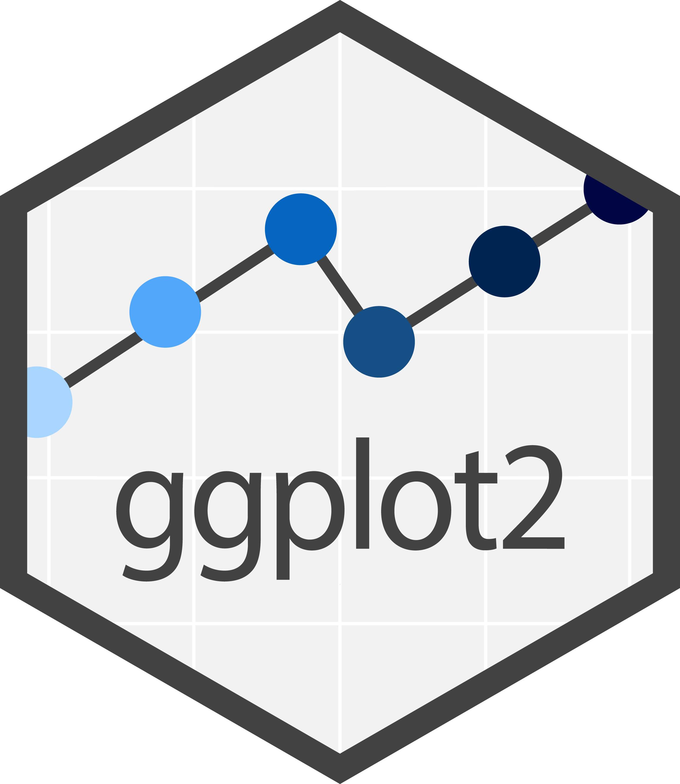

Intro to Data
Visualization
Carlos Matos // ISPUP // November 2023
Data Visualization
is any graphical representation of information and data.
Data Visualization
helps to amplify cognition, gain insights, discover, explain, and make decisions.
Importance of visualizing data
Figures will often carry the weight of your arguments.
- They need to be clear, attractive, and convincing.
- A good visualization can be mean the difference between success and failure
- highly influential vs obscure paper
- grant or contract won or lost
- help managers make informed decisions
- Getting your point across!
Calculations do NOT replace graphs
- 13 datasets with similar x and y means, standard deviations and x-y correlation
# A tibble: 13 × 6
dataset mean_x mean_y sd_x sd_y corr_x_y
<chr> <chr> <chr> <chr> <chr> <chr>
1 away 54.3 47.8 16.8 26.9 -0.1
2 bullseye 54.3 47.8 16.8 26.9 -0.1
3 circle 54.3 47.8 16.8 26.9 -0.1
4 dino 54.3 47.8 16.8 26.9 -0.1
5 dots 54.3 47.8 16.8 26.9 -0.1
6 h_lines 54.3 47.8 16.8 26.9 -0.1
7 high_lines 54.3 47.8 16.8 26.9 -0.1
8 slant_down 54.3 47.8 16.8 26.9 -0.1
9 slant_up 54.3 47.8 16.8 26.9 -0.1
10 star 54.3 47.8 16.8 26.9 -0.1
11 v_lines 54.3 47.8 16.8 26.9 -0.1
12 wide_lines 54.3 47.8 16.8 26.9 -0.1
13 x_shape 54.3 47.8 16.8 26.9 -0.1 Calculations do NOT replace graphs
Calculations do NOT replace graphs
Fundamentals of data viz
What do a heatmap, a pie chart and a line chart have in common?
Fundamentals of data viz
→ All data visualizations map data values into quantifiable features of the resulting graphic
→ We refer to these features as aesthetics
Mapped Dimensions
- Nº of Napoleon’s troops
- distance
- temperature
- latitude
- longitude
- direction of travel
- location relative to specific dates
Common aesthetics

Common aesthetics in data visualization
All plots have
Data + Mapping
ggplot2
Intro to {ggplot2}

- Has an underlying grammar
- Easy to combine multiple datasets in the same plot
- Solutions become more intuitive as we get to know the grammar
- Made to work iteratively: start with a raw data layer and add annotations and statistical summaries as you go
- Default graphics are quite good (publication-ready)
Anatomy of a ggplot
Five mapping components:
Layer: What we actually see in the plot. Geometric elements (“geoms”. e.g. points, lines, …) or statistical transformations (“stats”. e.g. counting, binning, fitting a model)
Scales: Convert the values in the data space to values in the aesthetic space
Coordinate system: Usually cartesian, but other are available (e.g. polar)
Facet: Subset displays
Theme: Control finer points of the visualization
Anatomy of a ggplot
Three of which are key components that exist in every plot:
→ Data
→ Mapping
→ Geom
Anatomy of a ggplot
- The overall template of a ggplot looks like this
- Where:
- DATA is your dataset
- Example GEOM_FUNCTION are geom_point(), geom_col(), geom_histogram(), …
- Example MAPPINGS are x = year, y = life_expectancy, fill = death_rate, …
First worked example
#Preparing the data
library(gapminder)
gm_latest <- gapminder %>%
filter(year == max(year)) %>%
rename(GDPpc = gdpPercap,
LE = lifeExp)
gm_latest# A tibble: 142 × 6
country continent year LE pop GDPpc
<fct> <fct> <int> <dbl> <int> <dbl>
1 Afghanistan Asia 2007 43.8 31889923 975.
2 Albania Europe 2007 76.4 3600523 5937.
3 Algeria Africa 2007 72.3 33333216 6223.
4 Angola Africa 2007 42.7 12420476 4797.
5 Argentina Americas 2007 75.3 40301927 12779.
6 Australia Oceania 2007 81.2 20434176 34435.
7 Austria Europe 2007 79.8 8199783 36126.
8 Bahrain Asia 2007 75.6 708573 29796.
9 Bangladesh Asia 2007 64.1 150448339 1391.
10 Belgium Europe 2007 79.4 10392226 33693.
# ℹ 132 more rowsFirst worked example
First worked example
First worked example
First worked example
First worked example
First worked example
Layer order
{ggplot2} Theme elements
- Taking the
mtcarsdataset as an example
{ggplot2} Theme elements

Interactive plots with plotly
Static maps with ggplot

Dynamic maps with leaflet
- For more info about leaflet check the website
Exercises
Carlos Matos // ISPUP::R4HEADS(2023)